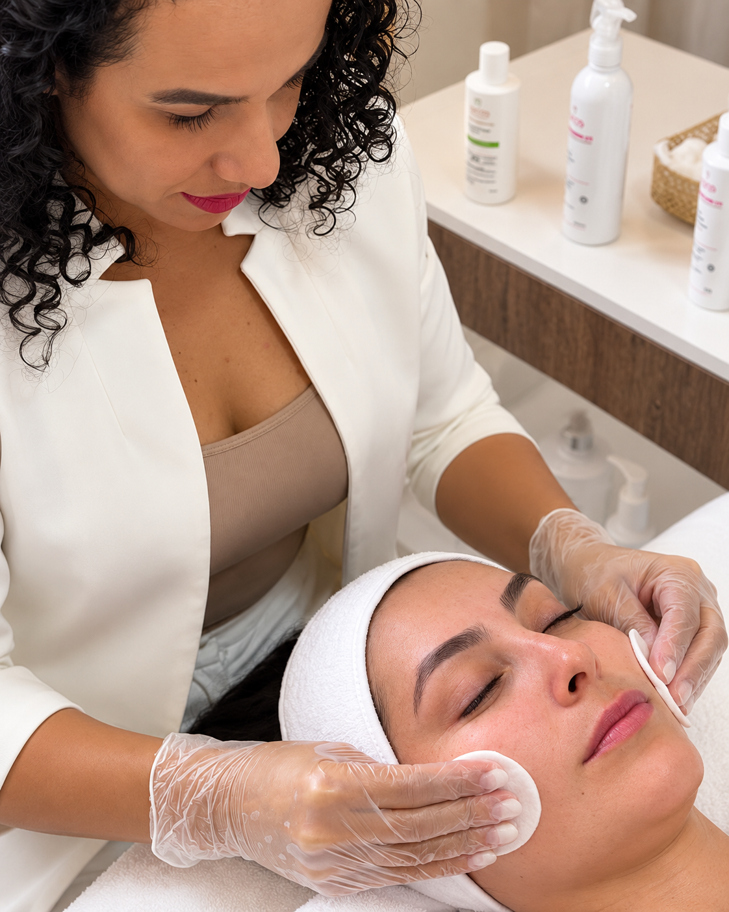
Harmonização Facial
Equilíbrio e naturalidade para o seu rosto.
Tratamentos faciais e corporais personalizados para realçar a sua beleza natural, com segurança, ciência e um olhar verdadeiramente individualizado.
Procedimentos faciais e corporais com tecnologia avançada, sempre respeitando a sua individualidade e os seus objetivos.

Equilíbrio e naturalidade para o seu rosto.
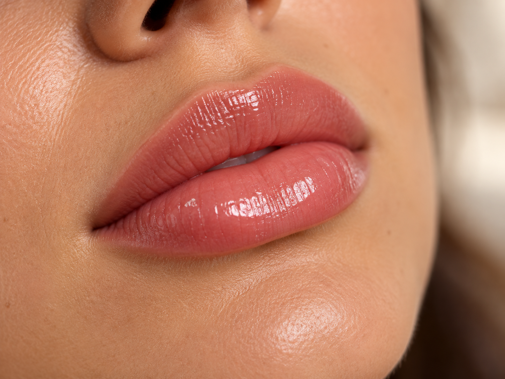
Mais definição, hidratação e autoestima.
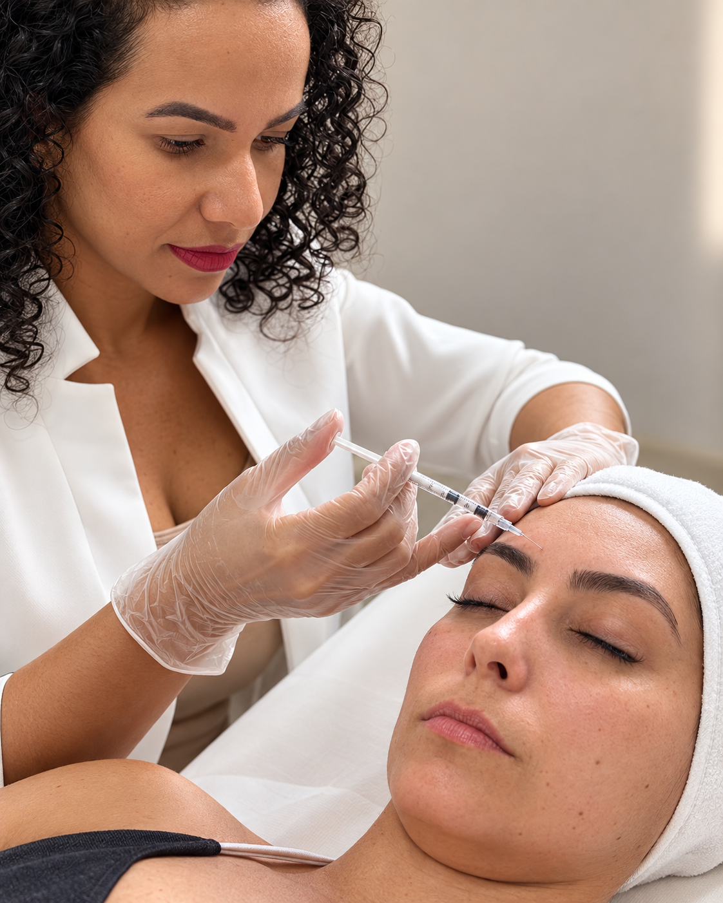
Prevenção e suavização das linhas de expressão.
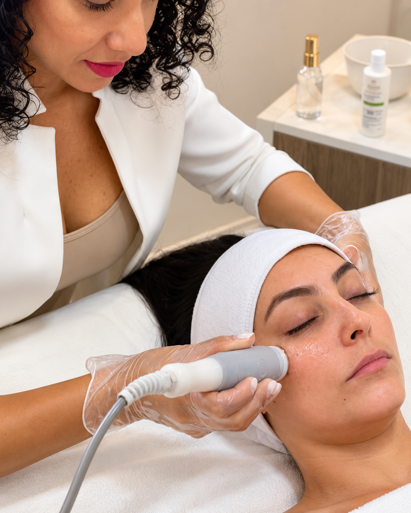
Tecnologia para uma pele mais saudável e luminosa.
Cada resultado é único, assim como cada história. Veja alguns antes e depois de pacientes que confiaram no meu trabalho.
Ver mais resultados →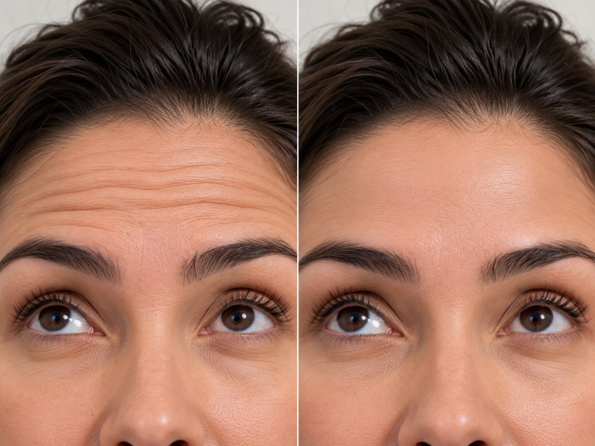
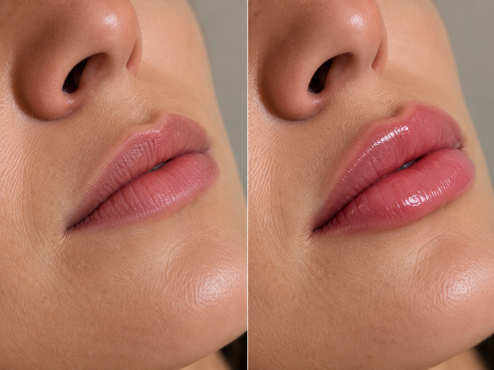
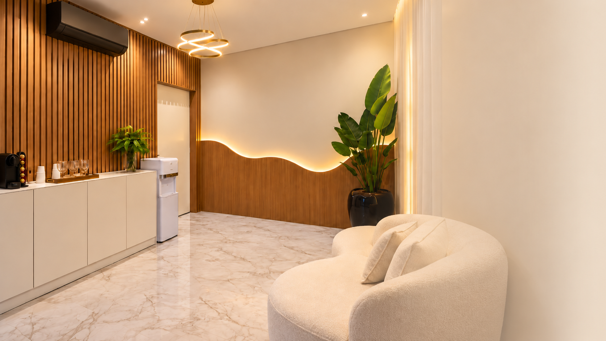
Um ambiente moderno, acolhedor e pensado em cada detalhe para proporcionar uma experiência segura, confortável e personalizada.
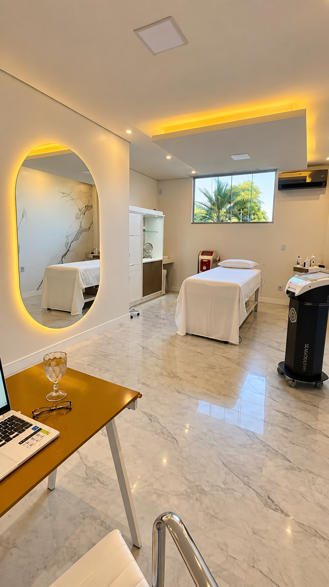
Ambiente acolhedor e privativo
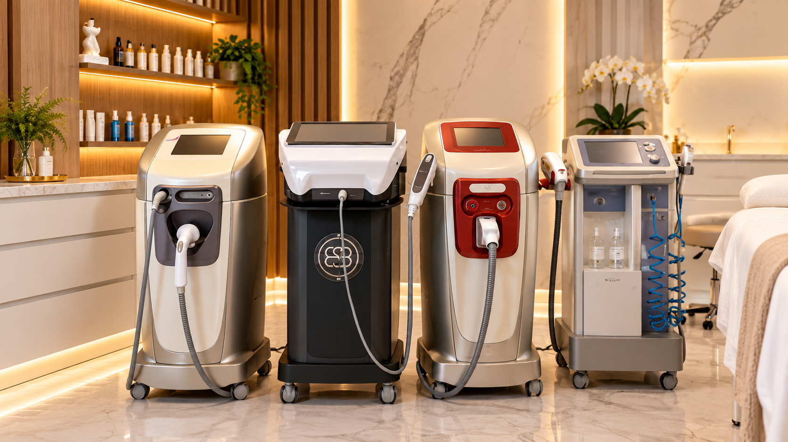
Equipamentos de última geração
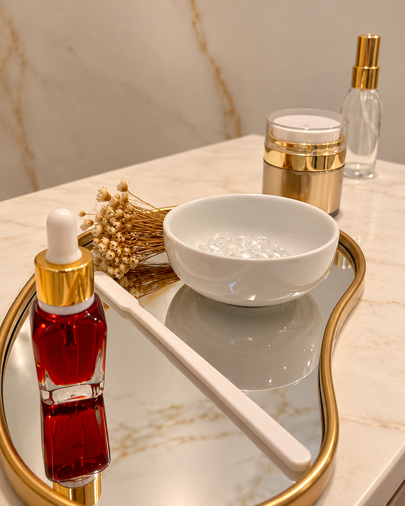
Conforto em todos os detalhes
Estamos em um espaço de fácil acesso, preparado para te receber com todo o cuidado e conforto que você merece.
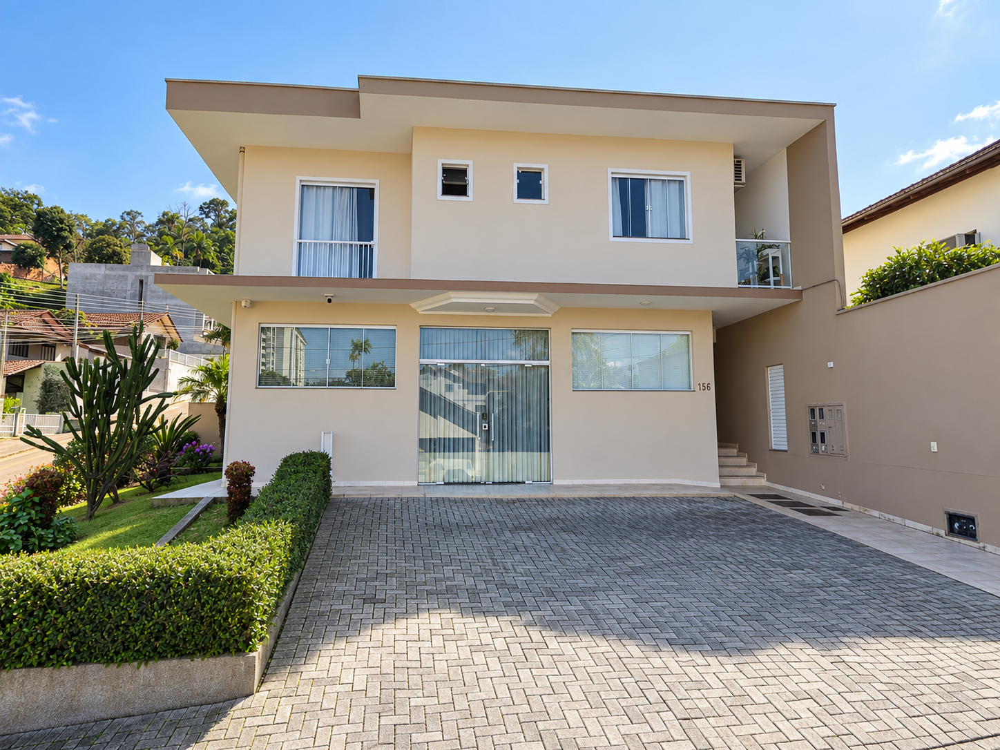
Preparamos respostas claras e transparentes para você se sentir segura e bem informada antes de dar o próximo passo no seu cuidado estético.
Cada plano de cuidados na clínica Naélen Almeida é 100% individualizado. Na sua avaliação inicial presencial, analisamos sua anatomia facial e corporal, qualidade da pele e histórico para identificar com precisão o que valoriza sua beleza de forma sutil, recomendando apenas os tratamentos que realmente trarão benefícios reais.
Seu conforto é prioridade absoluta. Utilizamos anestésicos tópicos potentes e de alta eficácia, cânulas e microagulhas ultrafinas, além de técnicas suaves e ambiente acolhedor. A grande maioria das pacientes relata apenas um leve incômodo passageiro, com experiência tranquila do início ao fim.
A busca por naturalidade e elegância é o pilar fundamental do nosso trabalho. Nosso objetivo não é transformar sua identidade ou criar exageros, mas sim restaurar contornos, melhorar a textura da pele e devolver a vivacidade com moderação e equilíbrio artístico.
A maioria dos tratamentos (como toxina botulínica, bioestimuladores e hidratações injetáveis) permite que você retorne às suas atividades diárias e profissionais imediatamente ou no dia seguinte. Pequenos pontos avermelhados ou edemas discretos são comuns e costumam regredir em 24 a 72 horas.
Orientamos evitar exercícios físicos intensos nas primeiras 24 a 48 horas, não massagear ou deitar sobre a área tratada logo após a aplicação, evitar exposição solar direta e usar protetor solar de amplo espectro todos os dias. Ao término da sessão, você recebe um guia completo de cuidados e canal direto para suporte.
A consulta inicial é um momento dedicado exclusivamente a você. Realizamos uma anamnese aprofundada, compreendemos suas expectativas, avaliamos as necessidades biológicas da pele e planejamos o tratamento de maneira transparente, explicando cada etapa antes de qualquer procedimento ser realizado.
O agendamento é realizado de forma ágil e humanizada pelo nosso WhatsApp oficial. Você escolhe o melhor dia e horário para a sua rotina. Oferecemos opções facilitadas de pagamento com condições à vista (Pix) e cartões de crédito com parcelamento sem complicações.
Recomendamos iniciar o planejamento entre 30 e 60 dias antes de ocasiões como casamentos, formaturas ou viagens. Esse intervalo assegura o tempo ideal para acomodação dos tecidos, período de revisão/retoque e para que estímulos de colágeno alcancem seu ápice de viço e firmeza.
Será um prazer te receber, entender as suas necessidades e indicar o melhor tratamento para a sua beleza e bem-estar.